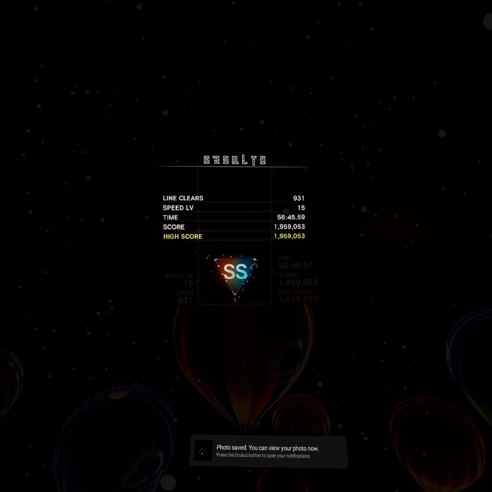

Tetris: Probably The Only Game I Could Never Get Tired Of
Tetris is one of those games that's on literally everything. It's very simple, so it doesn't take much to get at least a simple version of Tetris running. I used to not be interested in it though. I have vivid memories of playing an LCD Tetris handheld as a kid and not knowing what to do. I would just let the blocks stack up to the top and get frustrated that I didn't get it. My first foray into actually being somewhat kind of good at Tetris was around 2017, when Puyo Puyo Tetris came to the Nintendo Switch. A friend of mine had the demo for it, and we would play it during lunch at school. I couldn't wrap my head around Puyo Puyo at the time, so I was forced to learn Tetris. This was probably my first experience with "guideline" Tetris. That LCD handheld was probably made well before the Tetris Guideline was enforced in 2001, so PPT was essentially a new game to me. I was okay, but not great. Which is fair, considering I was previously not able to play it at all. That year, I got my own Switch, and shortly after I got Puyo Puyo Tetris for myself. I still wasn't SUPER into either Puyo or Tetris, but I played Tetris on occasion.
It would take until my junior year before I got REALLY into it. I had some intro programming classes that were very easy, so I often found myself with a lot of downtime. One day, I found jstris, a web-based clone of Tetris built for competing with other people. It was almost overnight. Every spare moment I had in that class went towards getting better at Tetris. Eventually, I was good enough to hold my own in jstris. I remember the guy who sat next to me in class was impressed. It was around this time when I played through the story mode of Puyo Puyo Tetris. I was inept at Puyo, but the game lets you skip if you fail repeatedly, so I made it through. I would later gain more of an appreciation for the story as I became more of a Puyo fan, but at the time I was like "eh" since I didn't know any of the returning characters.
More importantly, I ventured online for the first time. I was good at Jstris, so I figured I'd do decently in PPT's online modes. Oh, how wrong I was. I got stomped immediately and repeatedly. This was a good learning experience for me. Turns out, Jstris was a playground compared to the battlefield I had entered. To this day, I can only barely hold my own if I dare enter the online modes of Puyo Puyo Tetris (or Puyo Puyo Tetris 2, since the sequel came out midway through my senior year). Competitive Tetris is a frightening place full of complex setups and maneuvers that can spin a whirlwind of garbage onto your field before you can even blink. I took the time to learn how to do a Perfect Clear opening to send a large amount of garbage at the beginning of the match sometime closer to the end of my senior year. This is pretty much the bare minimum to survive out there. This put me from "will for sure get stomped" into "has a fighting chance" when it came to online battles.
In October of 2020, the Oculus Quest 2 came out. I worked at McDonald's at the time, and I had enough saved up to buy it day one. I bought it, and then some time later I bought Tetris Effect. Tetris Effect is an experience. It has beautiful visuals and music to go along with your Tetris gameplay, and it's stunning in VR. At launch, it only had singleplayer modes. Multiplayer was still one major update away, so I wasn't competing with other people. One day, I start playing some Tetris as normal. A long time later, I finally misdropped and game overed. I look at the results screen.
Almost an HOUR. And I wasn't even trying! I had to stretch and go get something to drink. Later, I would max out the game timer at OVER an hour, but this was my first taste of how endless Tetris could be.
All this to say, Tetris is a vast sea. There are many ways to play it, and at least as many platforms to play it on. I've played many versions of Tetris over the years, and each one has something cool going for it. If I were to give advice to someone going into Tetris, I'd say to just pick a version and learn. Tetris can vary wildly between versions, but the core gameplay is the same. Once you have that baseline knowledge, it's like a boat you can use to sail through other versions of Tetris. You might get rocked around by some unfamiliar game mechanics, but you'll be able to adapt to those, too.
also the hold piece is not cheating, DAD. it's there for a reason.